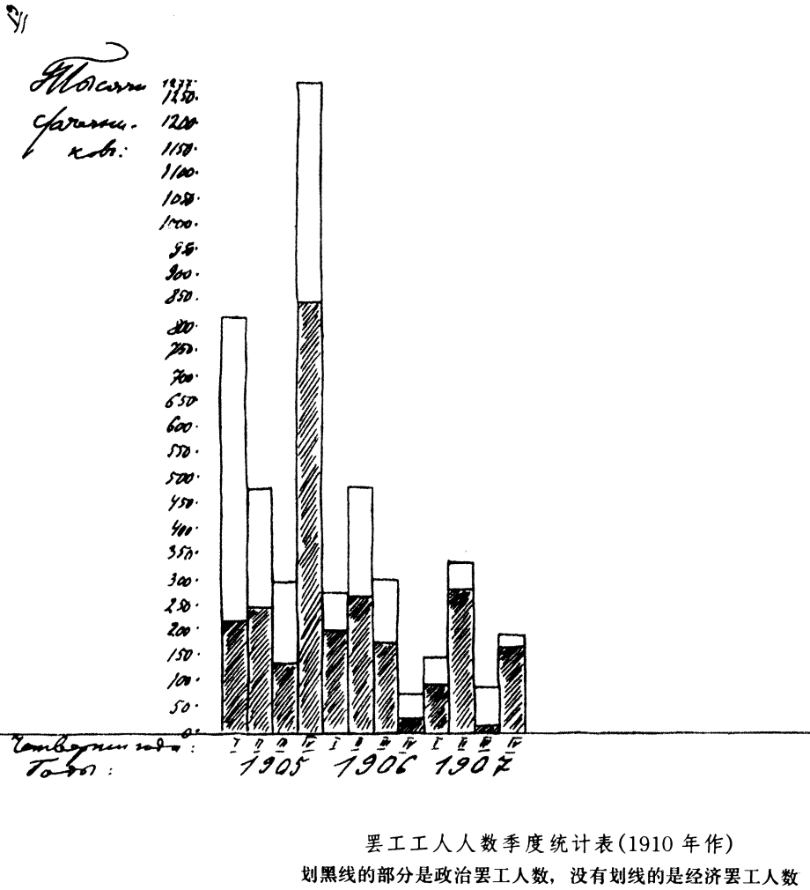

论俄国罢工统计（1910年9月底―11月）
论俄国罢工统计174
（1910年9月底―11月）
一
我国书刊已经不止一次地提到工商业部的著名出版物《工厂工人罢工统计》（1895―1904年和1905―1908年）。这些出版物中收集的材料非常丰富，非常宝贵，对这些材料进行充分的研究和全面的分析还需要花很多时间。上述出版物所作的分析，只是这个工作的第一步，是远远不够的。在本文中我们打算向读者介绍一次较为详尽的分析的尝试所得出的初步结论，而在另外的地方再作全面的叙述。
首先，下面的事实完全可以肯定：1905―1907年的俄国罢工是世界上从来没有过的现象。下面是一些国家每年罢工人数的资料（单位千）：
| 平均数 | 俄国 | 美国 |
德国 | 法国 |
| 1895―1904年 | 43 | | | |
| 1905年 | 2863 | | | |
| 1906年 | 1108 | | | |
| 1907年 | 740 | 660 |
527 | 438 |
| 1908年 | 176 | 1894―1908年这十五年的最高数 |
| 1909年 | 64 | | | |
1905―1907年是不寻常的三年。这三年中俄国罢工人数的最低数超过世界上最发达的资本主义国家任何一个时期曾达到过的最高数。当然，这并不是说俄国工人比西方工人更开展或力量更强大。但是这说明，人类迄今尚不清楚，工业无产阶级在这一领域中能够发挥出何等巨大的力量。事变的历史进程的特点在于，无产阶级的这一能量破天荒在一个正面临资产阶级革命的落后的国家里大致显示出来了。
要弄清楚在俄国这样一个同西欧相比工厂工人人数并不多的国家，罢工人数怎么会那么多，就应当注意反复罢工。下面就是每年反复罢工数以及罢工人数同工人人数的对比资料：
| 年份 | 罢工人数占工人总数的百分比 |
反复罢工占罢工总次数的百分比 |
| 1895―1904年 | 1.46―5.10％ |
36.2％ |
| 1905年 | 163.8 | 85.5 |
| 1906年 | 65.8 | 74.5 |
| 1907年 | 41.9 | 51.8 |
| 1908年 | 9.7 | 25.4 |
我们从这里看到，1905―1907年这三年的罢工人数是不寻常的，反复罢工发生之频繁，罢工人数在工人总数中所占的百分比之高也是引人注目的。
统计材料同时给我们提供了发生罢工的企业和参加罢工的工人的实际数。下面就是每年的数字：
| | 发生罢工的企业中罢工参加者
在工人总数中所占的百分比 |
| 10年（1895―1904年）总计 | 27.0％ |
| 1905年 | 60.0 |
| 1906年 | 37.9 |
| 1907年 | 32.1 |
| 1908年 | 11.9 |
这张表也和上面的表一样，它们都说明，1906―1907年罢工人数减少的幅度，总的说来要比1905―1906年的小得多。我们在下面的叙述中还会看到，在某些生产部门和某些地区，1906―1907年罢工运动不是衰落，而是增强了。现在我们只指出，各省实际参加罢工的工人人数的资料说明了下面的有趣现象。1905―1906年，绝大多数工业发达的省份参加罢工的工人百分比都下降了；但也有一些省份这个百分比提高了，这就是那些工业最不发达的所谓最偏僻的省份。例如远北方诸省：阿尔汉格尔斯克省（11000个工厂工人：1905年参加罢工的工人占0．4％；1906年——78．6％），沃洛格达省（6000个工厂工人；在这两年分别占26．8％和40．2％），奥洛涅茨省（1000个工厂工人；0——2．6％）；其次有黑海省（1000个工厂工人；42．4％——93．5％）；伏尔加河流域的省份中有辛比尔斯克省（14000个工厂工人；10％——33．9％）；中部农业区中有库尔斯克省（18000个工厂工人；14．4％——16．9％）；东部边疆地区中有奥伦堡省（3000个工厂工人；3．4％——29．4％）。
这些省份1905―1906年罢工参加者的每分比上升了，其意义是很明显的：1905年浪潮还来不及冲击到这里的工人，他们只是在那些比较先进的工人进行了一年之久的世界前所未见的斗争以后才开始被卷入运动的。我们在下面的叙述中，还会一再碰到这个对于了解事变的历史进程十分重要的现象。
相反，在某些工业非常发达的省份1906―1907年罢工参加者的百分比提高了，例如彼得堡省（1906年68．0％；1907年85．7％——几乎同1905年的85．9％相等），弗拉基米尔省（37．1％——49．6％），巴库省（32．9％——85．5％），基辅省（10．9％——11．4％）以及其他许多省。如果说，从许多省份1905―1906年罢工者百分比的增长中，我们看到工人阶级后卫队错过斗争发展高峰时期，那么另一些省份1906―1907年这一百分比的上升则向我们表明，先锋队在奋力重整旗鼓，中止业已开始的退却。
为了使这个正确的结论更加确切，我们把第一和第二类省份的工人人数和罢工实际参加者人数的绝对数字列举如下：
1905―1906年参加罢工的工人的百分比有提高的省份
| 这类省份的数目 | 这些省份的工厂工人人数 |
实际参加罢工的工人人数 |
| 1905年 | 1906年 |
| 10 | 61800 |
6564 | 21484 |
平均每省有6000个工厂工人。实际参加罢工的工人共增加15000人。
1906―1907年参加罢工的工人的百分比有提高的省份
| 这类省份的数目 | 这些省份的工厂工人人数 |
实际参加罢工的工人人数 |
| 1906年 | 1907年 |
| 19 | 572132 |
186926 | 285673 |
平均每省有3万个工厂工人。实际参加罢工的工人增加10万人，如果减去1906年未作统计的巴库省石油工人（大约不超过2―3万人），那么大约增加7万人。
后卫队在1906年和先锋队在1907年所起的作用，在这些资料中是很清楚的。
为了更精确地判断这些罢工的规模，应当列举俄国各地区的资料并且把罢工人数和工厂工人人数作对比。下面就是这些资料的综合数字：
| 工业区 | 1905年工厂工人人数
（单位千） |
历年罢工人数（单位千） |
| 1895―1904年总和 | 1905年 |
1906年 | 1907年 |
1908年 |
| Ⅰ．.彼得堡区 | 298 | 137 |
1033 | 307 | 325 |
44 |
| Ⅱ. ．莫斯科区 | 567 | 123 |
540 | 170 | 154 |
28 |
| Ⅲ. ．华沙区 | 252 | 69 |
887 | 525 | 104 |
35 |
| Ⅳ―Ⅵ：基辅、伏尔加河流域和哈尔科夫区 | 543 |
102 | 403 | 106 |
157① | 69① |
| 总计 | 1660 | 431 |
2863 | 1108 | 740 |
176 |
(1)
各地区工人参加运动的情况并不平衡。总的来看，166万工人参加罢工2863000人次，也就是说，每100个工人参加罢工164人次，或者换句话说，1905年有一半以上的工人平均罢工两次。但这些平均数一方面掩盖了彼得堡区同华沙区的根本区别，另一方面也掩盖了这两个区同其余所有各区的根本区别。彼得堡区和华沙区共有占总数1/3的工厂工人（166万人中占55万人），但两个区的罢工者占总数的2/3（2863000人中占192万人）。这两个区1905年每个工人平均罢工近四次。其余各区，111万工人参加罢工943000人次，从比例来看要比上述两个区少3/4。由此可见，自由派散布的并且得到我们的取消派共鸣的似乎工人对自己力量估计过高的论调，是多么不正确。相反，事实证明了工人对自己的力量估计不足，因为他们没有充分利用自己的力量。如果整个俄国罢工斗争都象彼得堡区和华沙区的那样干劲十足，那样不屈不挠（我们这里仅仅指这种斗争形式），那么罢工总人数将多一倍。换句话说，这个结论应该是：工人在运动的这一领域只估计到自己的一半力量，因为另外一半他们还没有利用过。从地理上看，西部和西北部已经觉醒，但中部、南部和声部有一半还在沉睡中。资本主义的发展对促进落后者的觉醒每天都是有所作为的。
根据各区的资料得出的另一个重要结论是：1905―1906年运动低潮是普遍存在的，虽然是不平衡的；1906―1907年，华沙区则出现特大低潮，而莫斯科区、基辅区和伏尔加河流域区稍好一些，但彼得堡区和哈尔科夫区却有增长。这些情况说明，从人民当时的觉悟程度和准备程度来看，上面谈到的运动形式在1905年已经完成自己的使命；由于社会政治生活的客观矛盾没有消失，这个运动形式应该过渡到高级形式。而经过一年的休息（如果可以这样说的话）或聚集力量的时期以后，在1906年，新的高潮在我国部分地区已经出现，已经开始了。如果自由派和追随他们的取消派在评价这一时期时，以藐视的口吻说什么这是“浪漫主义者的期待”，那么马克思主义者就要说，自由派拒绝支持这一局部的高潮，他们也就在毁掉保卫民主成果的最后一点可能性。
关于罢工者分布的地区问题，还应当指出，绝大多数集中在六个工业高度发达的省，其中的五个省有大城市。这六个省是：彼得堡省、莫斯科省、里夫兰省、弗拉基米尔省、华沙省和彼得库夫省。这六个省1905年共有工厂工人827000人，就是说几乎占工厂工人总数1661000人的一半。而这些省在1895―1904年这十年间罢工者总共246000人，就是说，约占罢工者总数431000人的60％；1905年2072000人，就是说，约占2863000人的70％；1906年852000人，就是说，约占1108000人的75％；1907年517000人，就是说，约占74万人的70％；1908年85000人，就是说，不到总数176000人的一半。(2)
因此，这六个省在1905―1907年这三年中所起的作用，要比在此以前和在此以后的时期所起的作用大。这就清楚了，大城市其中包括两个首都，在这三年中发挥的力量比其他地方大得多。分布在农村以及比较小的城市和工业中心的工人，他们占全国工人总数的一半，但是1895―1904年罢工者只占全国罢工总人数的40％，1905―1907年只占25―30％。因此，我们对上述结论作一点补充，可以说大城市已经觉醒了，而小城市和农村在很大程度上还在沉睡中。
除此之外，关于一般农村，也就是关于居住在农村的工厂工人，还可以举出城市中和城市以外的罢工次数（不是罢工人数）的统计资料。下面就是这方面的资料：
| | 罢工次数 |
| | 城市中 | 城市以外 |
总计 |
| 10年（1895―1904年）总和 | 1326 | 439 |
1765 |
| 1905年 | 11891 | 2104 |
13995 |
| 1906年 | 5328 | 786 |
6114 |
| 1907年 | 3258 | 315 |
3573 |
| 1908年 | 767 | 125 |
892 |
官方统计的编制者在列举以上资料时还指出，根据波果热夫先生的著名调查，俄国有40％的工厂在城市中，60％在城市以外176。因此，如果在平常时期（1895―1904年）城市的罢工次数比农村的罢工次数多两倍，那么城市的罢工次数占企业总数的百分比就达到农村的4+（1/4）倍。这个比数在1905年大致是8∶1，1906年9∶1，1907年15∶1，1908年(3)6∶1。换句话说，城市的工厂工人在罢工运动中所起的作用同居住农村的工厂工人相比，1905年比过去各年要大得多；不仅如此，1906年和1907年这种作用愈来愈大，也就是说，农村的工厂工人参加运动的人数比例愈来愈小了。居住农村的工厂工人在1895―1904年这十年中，所作的斗争准备最差，1905年以后最先转入退却，表现得最缺乏坚持性。先锋队，即城市的工厂工人在1906年曾经特别作了一番努力，而在1907年又作了比1906年还要大的努力，来制止这一退却。
下面我们看看罢工者按生产部门分布的情形。为此我们提出以下四种主要的生产类别：（Ａ）五金工人；（Ｂ）纺织工人；（Ｃ）印刷工人、木材加工工人、皮革工人和化学生产工人；（Ｄ）矿产加工工人和食品生产工人。下面是各年的资料：177
| 生产类别 | 1904年工厂工人总数 |
各年罢工人数（单位千） |
| 1895―1904年总和 | 1905年 |
1906年 | 1907年 |
1908年 |
| A | 252 | 117 |
811 | 213 | 193 |
41 |
| B | 708 | 237 |
1296 | 640 | 302 |
56 |
| C | 277 | 38 |
471 | 170 | 179 |
24 |
| D | 454 | 39 |
285 | 85 | 66 |
55 |
| 总计 | 1691 |
431 | 2863 | 1108 |
740 | 176 |
五金工人在1905年以前的十年中作的准备最充分。这十年在他们中差不多有一半人（252000人中有117000人）罢过工。由于他们的准备最充分，他们在1905年也站在最前面。他们的罢工人次超过他们人数的2倍多（811比252）。在分析1905年各个月份的统计资料时，这个先锋队的作用更显得突出（要在一篇短文中详细分析这些统计资料是不可能的，我们将在另外的地方再作分析）。1905年的各个月份中，五金工人同所有其余生产类别一样，罢工人数的最高峰不是在10月，而是在1月。先锋队以最大的干劲掀起运动，从而“震动了”其他群众。在1905年1月份一个月之中，五金工人有155000人罢工，就是说，占总数（252000人）的2/3；一个月的罢工者人数比在此以前十年的总数还要多得多（155000人比117000人）。但是这种几乎是超人的干劲使得先锋队到1905年年底便筋疲力尽了：在1906年五金工人运动衰落的幅度居首位。他们的罢工人数减少最多：从811000人减少到213000人，就是说，几乎减少了3/4。1907年先锋队又重新聚积力量，总的来说罢工人数减少得不多（从213000人减小到193000人），而在金属加工这一生产类别的三种最主要的生产部门即机械制造、造船和铸铁部门中，罢工人数还从1906年的104000人增加到1907年的125000人。
纺织工人是俄国工厂工人的主力，占总数的1/2弱（1691000人中有708000人）。就1905年以前十年中所作的准备来说，他们居第二位：他们之中1/3的人罢过工（708000人中有237000人）。就1905年运动的力量来说也居第二位：每100个工人中罢工者约有180人次。他们卷入斗争要比五金工人晚：1月份，他们的罢工人数比五金工人的略多一些（164000人比155000人），而10月份就超过一倍多（256000人比117000人）。虽然俄国工厂工人的这个主力卷入运动较晚，但他们在1906年坚持得最久：这一年的衰落是普遍的，但是纺织工人的衰落最小，只减少了1/2（640000人比1296000人），而五金工人则几乎减少了3/4（213000人比811000人），其他工人减少了3/5―5/7不等。只是到1907年，这个主力也筋疲力尽了：1906―1907年这一生产类别运动的衰落最厉害，罢工者减少1/2以上（从640000人减少到302000人）。
我们对其余各生产部门的资料不作详细分析，仅指出一点，就是Ｄ类排在最后，他们的准备最差，参加运动的情况也最差。如果以五金工人为标准，那就可以说，Ｄ类在1905年一年中就“亏欠”100多万个罢工者。
五金工人和纺织工人的关系很有代表性，类似先进分子和广大群众的关系。由于在1895―1904年没有自由的组织、自由的报刊以及议会讲坛等等，群众在1905年只可能在斗争的进程中自发地团结起来。这个团结的过程是：罢工的浪潮一浪高一浪，而先锋队在运动的初期为了“震动”广大群众，曾经耗费了巨大的精力，因此在运动高潮到来时他们就显得比较疲惫。1905年1月份共有444000罢工者，其中五金工人155000人，即占34％，而在10月份罢工者总数为519000人，其中五金工人117000人，即占22％。很明显，运动的这种不平衡性，因力量的分散和不够集中而无异于力量的某种浪费。这种情况说明，第一，高度集中力量，可以提高效果；第二，由于所研究的时期的客观条件，在每一个浪潮的初期进行一系列的摸索即所谓勘探、试验等等，这是必不可少的，是为了取得胜利所必需的。所以，自由派以及追随他们的马尔托夫之流的取消派，从他们的“无产阶级对自己的力量估计过高”的理论出发，责备我们“做了自发的阶级斗争的尾巴”的时候，这班先生正是自己对自己作判决，并且不由自主地对我们大加恭维。
为了结束对每年的罢工统计资料的述评，我们还要列出一些数字，说明罢工的规模和持续的时间以及罢工造成的损失。
罢工参加者的平均数：
| 10年（1895―1904年）中 | 244个工人 |
| 1905年 | 205个工人 |
| 1906年 | 181个工人 |
| 1907年 | 207个工人 |
| 1908年 | 197个工人 |
1905年罢工规模缩小了（指参加人数），是由于大批小企业参加斗争，降低了参加者的平均数。1906年罢工规模的进一步缩小，看来是反映了斗争力量的减弱。1907年在这方面也有一些进步。
如果我们看看纯粹的政治罢工的参加者的平均数，那么得到的各年份的数字就是：1905年——180人；1906年——174人；1907年——203人；1908年——197人。这些数字更清楚地表明了1906年斗争力量的减弱和1907年新的增长，或（也可能是与此同时）主要是最大的企业参加了1907年的运动。
每个罢工工人的罢工天数：
| 10年（1895―1904年）中 | 4.8天 |
| 1905年 | 8.7天 |
| 1906年 | 4.9天 |
| 1907年 | 3.2天 |
| 1908年 | 4.9天 |
这些数字表明，斗争的顽强性以1905年为最高，后来就急剧下降，直到1907年，只是1908年才又有回升。必须指出，西欧罢工的不屈不挠的斗争精神相比之下要高得多。在1894―1898年这五年中，每个罢工工人的罢工天数意大利是10．3天，奥地利是12．1天，法国是14．3天，英国是34．2天。
如果单独列出纯粹的政治罢工，那我们就得到以下的数字：1905年每个罢工者7天，1906年1．5天，1907年1天。经济原因引起的罢工，其特点往往是斗争持续时间较长。
当我们注意到历年罢工斗争的不屈不挠精神程度各不相同时，我们就得出一个结论：关于罢工者人数的资料还不足以比较出各年运动的规模。只有下述每年罢工天数才能准确地确定运动的规模：
| | | 其中属于纯粹政治罢工的 |
| 10年（1895―1904年）总和 | 2079408 |
― |
| 1905年总和 | 23609387 | 7569708 |
| 1906年总和 | 5512749 | 763605 |
| 1907年总和 | 2433123 | 521647 |
| 1908年总和 | 864666 | 89021 |
这样，仅1905年这一年准确算出的运动规模达到以前10年总和的11倍多。换句话说：1905年的运动规模达到以前10年运动的每年平均规模的115倍。
这个比数告诉我们，在官方的学者中（也不仅仅在他们中）经常可以碰到这样的人，他们把所谓“和平的”、“有机的”、“演进的”时代的社会政治发展速度当作一切时候的标准，当作现代人类可能达到的发展速度的标志，这种人的眼光是何等短浅。实际上所谓“有机的”时代的“发展”速度是最大的停滞的标志、是发展的最大障碍的标志。
根据罢工天数的资料，官方统计的编制者计算出工业所蒙受的损失。这种损失（减产）1895―1904年这十年总共为1040万卢布，1905年为12730万卢布，1906年为3120万卢布，1907年为1500万卢布，1908年为580万卢布。1905―1907年这三年减产的损失共值17350万卢布。
工人在罢工期间少领工资而受的损失（按各生产部门日工资平均额确定），在这几年中总计如下（单位千卢布）：
生产类别
（见上面第18页①） |
1905年工厂工人数
（单位千） |
罢工使工人受到的损失
（单位千卢布） |
| 1895―1904年总和 | 1905年 |
1906年 | 1907年 |
1908年 |
| A | 252 | 650 |
7654 | 891 | 450 |
132 |
| B | 708 | 715 |
6794 | 1968 | 659 |
228 |
| C | 277 | 137 |
1997 | 610 | 576 |
69 |
| D | 454 | 95 |
1096 | 351 | 130 |
22 |
| 总计 | 1691 |
1597 | 17541 | 3820 |
1815 | 451 |
FN1
在1905―1907年这三年中，工人的损失共2320万卢布，就是说，达到在此以前10年期间总数的14倍多(4)。官方统计的编制者算出，工厂工业的在职工人（而不是罢工者），在头10年中所受的损失，每人平均每年约10戈比，1905年约10卢布，1906年约2卢布，1907年约1卢布。但是这个算法忽略了不同生产部门的工人在这方面的巨大差异。下面就是根据上面表格中的数字作出的比较详细的计算：
| 生产类别 | 每个工人工业工人的罢工损失数额（单位卢布） |
| 1895―1904年10年总和 | 1905年 |
1906年 | 1907年 |
1908年 |
| A | 2.6 | 29.9 |
3.5 | 1.8 | 0.5 |
| B | 1.0 | 9.7 |
2.8 | 0.9 | 0.3 |
| C | 0.5 | 7.2 |
2.2 | 2.1 | 0.2 |
| D | 0.2 | 2.4 |
0.7 | 0.3 | 0.05 |
| 总计 | 0.9 |
10.4 | 2.3 | 1.1 |
0.3 |
从这里可以看到，每个五金工人（Ａ类）罢工受到的损失1905年几乎达到30卢布，比平均数大2倍，达矿产加工工人和食品工人（Ｄ类）损失的平均数的10倍多。我们上面作出的关于五金工人在这种形式的运动中到1905年年底力量已经耗尽的结论，特别明显地为这一统计表所证实：1905―1906年，Ａ类损失数额减少7/8强，而其他各类只减少2/3―3/4。
关于罢工的各年份统计资料我们就分析到这里，在下一篇文章中我们将研究按月统计的资料。
二
对于研究波浪式的罢工运动来说，按年分时期显得太长。根据我们所掌握的统计资料，现在可以说，1905―1907年这三年中，每一个月都抵得上一年。这三年的工人运动抵得上30年。1905年没有一个月罢工数低于1895―1904年这十年期间每年的罢工者最低数，而1906年和1907年这样的情况每年只有两个月。
很遗憾，无论官方统计按月份整理的资料，还是按省份整理的资料，都非常不能令人满意。许多综合材料必须返工。由于这一原因，同时也考虑到篇幅关系，我们暂时只涉及各季度的资料。关于经济罢工和政治罢工的划分问题，我们要指出，官方统计所提供的1905年和1906―1907年的资料不完全适合于作比较。混合罢工——按官方统计编目即提出经济要求的第12项和提出经济要求的第12项（ｂ）——在1905年算作政治罢工，而以后算作经济罢工。我们把1905年的这类罢工也算作经济罢工。
罢工人数（单位千）178：
| 年份 | 1905年 |
1906年 | 1907年 |
| 季度 | Ⅰ | Ⅱ |
Ⅲ | Ⅳ | Ⅰ |
Ⅱ | Ⅲ | Ⅳ |
Ⅰ | Ⅱ | Ⅲ |
Ⅳ |
| 总计 | 810 | 481 |
294 | 1277 | 269 |
479 | 296 | 63 |
146 | 323 | 77 |
193 |
| 其中 | |
| 经济罢工 | 604 | 239 |
165 | 430 | 73 |
222 | 125 | 37 |
52 | 52 | 66 |
30 |
| 政治罢工 | 206 | 242 |
129 | 847 | 196 |
257 | 171 | 26 |
94 | 271 | 11 |
163 |
用线条框出的时期是出现最大高潮的时期。从表上一眼就会看到，这些时期与这三年中非常突出的重大政治事件是相吻合的。1905年第一季度——1月9日事件和它的影响；1905年第四季度——十月和十二月事件；1906年第二季度——第一届杜马，1907年第二季度——第二届杜马；1907年最后一个季度的高潮最不明显，这是由于审讯第二届杜马工人代表而发生的11月政治罢工（134000个罢工者）造成的。因此，这三年的最后一个时期，也是向俄国历史的另一阶段过渡的时期，恰恰是一个例外，它证明了下面的规律：如果罢工浪潮的高涨在这方面并不意味着普遍的社会政治高涨的话，那么进一步仔细考察就会发现，罢工浪潮也不存在，而只有个别孤立的示威性的罢工。

这三年的规律是，罢工浪潮的高涨标志着国家整个社会政治演进的决定性的转折点。罢工统计清楚地向我们指出了这个演进的主要动力。这当然并不意味着，这种运动形式是唯一的或最高的形式——我们知道，不是这样的——这并不意味着，可以从运动的这一形式出发对社会政治演进的局部问题作出直接的结论。但是这意味着，我们看到一幅代表事态总趋势的主要动力的阶级的运动统计图（当然这幅图是很不完整的）。其他阶级的都围绕着这个中心运动，跟着它走，受它指引或由它决定方向（朝积极的方面或朝消极的方面），以它为转移。
只要回忆一下这三年中俄国政治历史的主要时期，就会确信这一结论是正确的。我们来看看1905年的第一季度。我们在这个季度的前夕看到了什么呢？我们看到了有名的地方自治－宴会运动。把工人在这个运动中的行动看作“高级形式的示威”是否正确呢？关于不引起自由派“惊慌”的言论是否正确呢？把这些问题摆到罢工统计的框子里（1903年：87000人；1904年：25000人；1905年1月：444000人，其中有123000个政治罢工者），那么答案也就清楚了。上述关于地方自治运动的策略的争论，只是反映了自由派运动和工人运动客观上存在的对抗性。
我们在一月(5)高潮以后看到了什么呢？我们看到了有名的二月命令179，开始对国家机构实行某些改革。
请大家看一看1905年的第三季度。政治史上居于首要地位的是8月6日法令（所谓布里根杜马）。这个法令能不能付诸实施呢？自由派认为，能付诸实施，并且根据这种看法决定推行自己的行动路线。马克思主义者则持相反的观点，这种观点没有得到那些客观上实践自由主义观点的人们的赞同。1905年最后一个季度的事态解决了争论。
从四个季度的数字来看，似乎1905年年底有一个高潮。事实上却有两个高潮，两个高潮之间是一个短短的运动退潮期。10月份有519000个罢工者，其中有328000个纯粹政治罢工者，11月份有325000个罢工者（其中有147000个政治罢工者），12月份有433000个罢工者（其中有372000个政治罢工者）。在历史书刊上发表过自由派和我们的取消派（切列万宁之流）的一种观点，他们认为十二月高潮中有“人为的”因素。统计数字驳斥了这种观点，并且表明纯粹政治罢工的人数恰恰以这个月为最高，达到了372000人。那些迫使自由派作出一定的评价的种种倾向是可以理解的，但是从纯粹科学的观点来看，一个月的纯政治罢工者总数几乎相当于前10年罢工者总数的9/10的规模这样大的运动，即使说它有一点点是“人为的”，也都是荒谬的。
最后，我们来看看1906年春天和1907年春天最后两个高潮(6)。这两个高潮同1905年一月高潮和五月高潮（也是前者超过后者）有一个共同的区别，这两个高潮是退却性的，而1905年的两个高潮是进攻性的。一般说来，这也是这三年中后两年和前一年的区别。因此，对于1906年和1907年的上述两个时期数字提高的正确估价应当是：这种提高标志着退却者中止退却并且尝试重新转入进攻。这些高潮的客观意义就是这样，这一点我们现在从整个“狂飙突进的三年”的最终结果来看，已经清楚了。第一和第二两届杜马无非是当下面中止退却的时候上面进行的政治谈判和政治示威。
由此可以清楚地看到，自由派的目光是多么短浅，他们竟把这些谈判看成是某种孤立的、独立的东西，不取决于这样或那样的中止退却的持续时间的长短和导致结果的好坏。由此可以清楚地看到，现在轻蔑地谈论退却时“浪漫主义者的期待”的马尔托夫之流取消派，他们客观上是依附于自由派的。统计数字向我们表明，这里并不是“浪漫主义者的期待”，而是实际上的确存在的退却的中断、退却的中止。要是没有这种中止，那么这个历史上完全的不可避免的1907年六三事件（因为退却仍然是退却），就可能提前一年甚至更早发生。
我们联系政治历史的主要时期对罢工运动的历史进行了考察，现在我们来研究一下经济罢工和政治罢工的相互关系。官方统计提供了有关这个问题的极有意义的资料。我们先看看这三年每年的总计数：
| | 罢工人数（单位千） |
| | 1905年 |
1906年 | 1907年 |
| 经济罢工 | 1439 |
458 | 200 |
| 政治罢工 | 1424 |
650 | 540 |
| 总计 | 2863 |
1108 | 740 |
由此得出的第一个结论是，经济罢工同政治罢工有着极其密切的联系。它们同时上升同时下降。进攻时代（1905年）运动强大的标志是，政治罢工好象是建立在不亚于它的强大的经济罢工的广泛基础之上，单是这一年的经济罢工就远远超过了1895―1904年这十年的总数。
在运动出现低潮的时候，经济罢工人数要比政治罢工人数下降得快。1906年，尤其是1907年的运动，其弱点无疑是缺少经济斗争的广泛可靠的基础。另一方面，政治罢工人数一般下降得较慢，尤其是1906―1907年下降得不多，这种情况看来是说明了一个我们所熟悉的现象：先进阶层以最大干劲来中止退却并且变退却为进攻。
这个结论完全可以用不同生产类别的经济罢工和政治罢工的对比资料来证实。为了避免在本文中罗列五花八门的数字，我们只拿1905年各季度五金工人和纺织工人作一个对比，并且这一次我们将引用官方统计的综合材料(7)，这一年的混合罢工算作政治罢工，这一点我们上面已经指出。
| | | 罢工人数（单位千） |
| | 1905年各季度 | Ⅰ |
Ⅱ | Ⅲ | Ⅳ |
| A类（五金工人） | 经济罢工 | 120 |
42 | 37 | 31 |
| | 政治罢工 | 159 | 76 |
63 | 283 |
| | 总计 | 279 | 118 |
100 | 314 |
| B类（纺织工人） | 经济罢工 | 196 |
109 | 72 | 182 |
| | 政治罢工 | 111 | 154 |
53 | 418 |
| | 总计 |
307 | 263 | 125 |
600 |
先进阶层和广大群众的区别极为明显。从年初到年底，先进分子中的纯粹经济罢工者一直是少数。但在第一季度，这一类的纯粹经济罢工者数字也很大（12万），显然，对五金工人中的不少人须要加以“震动”，他们是从提出纯粹的经济要求而开始投身运动的。在纺织工人中我们看到，运动初期（第一季度）纯粹经济罢工者占绝大多数，在第二季度就成了少数，不过在第三季度又成为多数。1905年的最后一个季度，运动达到高潮的时候，五金工人中纯粹经济罢工人数占罢工者总数的10％，占五金工人总数的12％；——而在这一时期纺织工人中纯粹经济罢工者占罢工者总数的30％，占纺织工人总数的25％。
现在可以完全看清楚了，经济罢工和政治罢工之间究竟是什么样的相互依存关系：如果它们没有密切的联系，那就不可能有真正广泛的、真正群众性的运动；而这种联系的具体形式是，一方面，在运动初期和在吸引新的阶层参加运动的时候，纯粹经济罢工起主要的作用，另一方面，政治罢工唤醒并推动落后者，推广并扩大运动，把运动提高到更高阶段。
仔细研究一下在这三年中新人究竟怎样被卷入运动，是非常有意思的。这方面的统计在基本材料中有，因为对每一次罢工都单独作了资料卡。但是官方统计对这些材料的加工整理非常不能令人满意，卡片上很多极其宝贵的材料都没有加以整理，不知去向。下面这份关于罢工次数在各类企业数中所占的百分比的表格，提供了大致的轮廓：
罢工次数在企业数中所占的百分比
| 企业类别 | 10年总和（1895―1904年） | 1905年 |
1906年 | 1907年 | 1908年 |
| 20个工人以下 | 2.7 | 47.0 |
18.5 | 6.0 | 1.0 |
| 21―50工人 | 7.5 | 89.4 |
38.8 | 19.0 | 4.1 |
| 51―100工人 | 9.4 | 108.9 |
56.1 | 37.7 | 8.0 |
| 101―500工人 | 21.5 | 160.2 |
79.2 | 57.5 | 16.9 |
| 501―1000工人 | 49.9 | 163.8 |
95.1 | 61.5 | 13.0 |
| 1000工人以上 | 89.7 | 231.9 |
108.8 | 83.7 | 23.0 |
我们在前面关于不同地区和不同生产类别的资料中见到的先进阶层，现在出现在关于不同类别企业的资料中。在所有这几年中，有一个一般规律，就是企业的规模愈大，企业参加罢工的百分比就愈高。同时1905年有两个特点，第一，企业愈大，反复罢工的次数也就愈多；第二，1905年同1895―1904年这十年相比，企业愈小，百分比提高也愈快。这清楚地表明，吸引新人、吸引从未参加过罢工的阶层的工作进行得特别迅速。这些新人是在运动发展的最大高潮时期被迅速地卷入的，因此他们表现得最不坚决：1906―1907年，企业参加罢工的百分比，以小企业下降得最厉害，而大企业中下降得最少。先锋队力求中止退却，为此作的努力时间最久，态度最坚决。
但是我们还是回过来看看关于经济罢工和政治罢工对比的资料。上面（第19页）FN2列举的关于这三年中的季度资料首先表明，一切巨大的高潮不仅和政治罢工人数的上升有关，而且也和经济罢工人数的上升有关。只有1907年春季的高潮有点例外，经济罢工者的最高数不是出现在这一年的第二季度，而是出现在第三季度。
在运动初期（1905年第一季度）我们看到经济罢工的人数大大超过政治罢工的人数（604000人和206000人）。运动的高峰时期（1905年第四季度）掀起了经济罢工的新浪潮，显然不及一月浪潮大，但政治罢工占很大的优势。第三次高潮即1906年春季的高潮，再一次表明了经济罢工和政治罢工人数都有很大的增加。仅仅举出这些资料就足以驳倒那种认为经济罢工和政治罢工的联合是“运动的弱点”的看法。这种看法自由派讲过很多次；取消派分子切列万宁在谈到1905年11月时也重复了这种看法；不久前马尔托夫在谈到这个时期时又重复了这种看法。特别是他们经常以争取八小时工作制的斗争遭到失败为例来证明这种观点的正确180。
这个失败的事实是不容争辩的，而任何失败都说明运动的弱点，这也是不容争辩的。但是自由主义观点认为经济斗争和政治斗争的联合正是“运动的弱点”；马克思主义观点则认为弱点在于这个联合不够，在于经济罢工者还不够多。统计材料清楚地证实了马克思主义观点的正确，揭示了这三年的“一般规律”：经济斗争增强，运动就增强。而这个“一般规律”同任何资本主义社会的基本特征存在着逻辑联系：资本主义社会中总会有一些很落后的阶层，只有运动达到白热化，才能唤醒他们，而且也只有提出经济要求，他们才能投入斗争。
我们把1905年最后一个季度的高潮同在此以前和在此以后的两次高潮作一比较，也就是同1905年第一季度和1906年第二季度的高潮作一比较，就会清楚地看到，10―12月的高潮，从经济基础的广度来看，即从经济罢工者占罢工者总数的百分比来看，不及前一次高潮和后一次高潮。毫无疑问，八小时工作制的要求赶走了很多能够同情工人的其他意愿的资产阶级分子。但同样毫无疑问的是，这个要求吸引了很多以前还没有被卷入运动的非资产阶级分子，1905年最后一个季度，他们有43万人参加经济罢工，而在1906年第一季度这个数字下降到73000人，但1906年第二季度又重新上升到222000人。这就说明，弱点不在于缺少资产阶级的同情，而在于缺少或没有及时得到非资产阶级分子的支持。
自由派总是害怕这种形式的运动总会赶跑某些资产阶级分子。马克思主义者总是指出，这种形式的运动总会吸引广泛的非资产阶级分子。Suum cuique——各有各的看法。
官方关于罢工结果的统计资料是很能说明工人同企业主的斗争波折的问题的。这份统计的总计数如下：
罢工者在罢工中得到的各种结果的百分比企业类别
| 罢工结果 | 10年总和（1895―1904年） | 1905年 |
1906年 | 1907年 | 1908年 |
| 有利于工人 | 27.1 | 23.7 |
35.4 | 16.2 | 14.1 |
| 互相让步（妥协） | 19.5 | 46.9 |
31.1 | 26.1 | 17.0 |
| 有利于业主（不利于工人） | 51.6 | 29.4 |
33.5 | 57.6 | 68.8 |
由此首先得出的一般结论是，运动威力最大，工人的胜利也就最大。对于工人来说1905年得利最大，因为这一年罢工斗争的冲击力最大。这一年妥协次数也特别多：双方都还不适应新的、不寻常的条件，企业主在此起彼伏的罢工影响下显得惊慌失措，因此罢工以妥协而告终的情况比以往任何时候都多。1906年斗争得愈来愈难分难解，妥协次数就大大减少；但是总的说来工人还是常常取得胜利的：赢得胜利的罢工者所占的百分比超过失败者所占的百分比。从1907年起，妥协的次数减少了，工人失败的情况就不断加多。
我们看看绝对数字，那就清楚了，在1895―1904年这十年中，总共有117000个工人赢得罢工胜利，而1905年一年就增加了2倍多：369000人，1906年则增加将近1/2：163000人。
但是，对于研究1905―1907年这三年中罢工斗争的波浪式运动来说，把一年作为一个时期太长了。我们也不列出每个月的资料，以免占用过多篇幅，我们只列出1905年和1906年的季度资料。1907年可以略去，因为在这一年的罢工结果中我们没有看到间歇、低潮和高潮，只看到工人一味退却，资本家一味进攻，而这些情况在上面列出的年度资料中已经完全反映出来了。
| 年份 | 1905年 |
1906年 |
| 季度 | Ⅰ | Ⅱ |
Ⅲ | Ⅳ | Ⅰ |
Ⅱ | Ⅲ | Ⅳ |
| 罢工结果有利于工人 | 158 | 71 |
45 | 95 | 34 |
86 | 37 | 6 |
| 妥协 | 267 | 109 |
61 | 235 | 28 |
58 | 46 | 8 |
| 有利于业主 | 179 | 59 |
59 | 100 | 11 |
78 | 42 | 23 |
| 总计① | 604 | 239 |
165 | 430 | 73 |
222 | 125 | 37 |
(8)
从这些资料中可以得出一些很有意义的结论，需要详加研究。总的来说，我们看到工人的冲击力愈大，他们的斗争也就愈有成效。上面的资料能不能证明这一点呢？1905年第一季度不及1905年第二季度对工人有利，虽然第二季度运动减弱了。但是这个结论是错误的，因为第一季度的资料包括一月高潮（321000个经济罢工者）和二月低潮（228000人）与三月低潮（56000人）。单就1月这个高潮时期来说，我们看到，工人在这个月胜利了：87000个罢工者赢得胜利，81000个罢工者失败，152000人以达成妥协结束罢工。这一时期的两个低潮的月份（2月和3月）给工人带来了失败。
第二时期（1905年第二季度）是高潮时期，在5月达到了顶峰。斗争的高潮意味着工人的胜利：71000个罢工者赢得胜利，59000人失败，109000人以妥协结束罢工。
第三时期（1905年第三季度）是一个低潮时期：罢工人数要比第二季度少得多。攻击力的减弱意味着业主的胜利：59000个工人罢工失败，只有45000人取得胜利。罢工失败的工人所占的百分比达到35．6％，也就是比1906年高。这说明，1905年工人所受到的“普遍同情气氛”（自由派大肆渲染这种气氛，说这是工人胜利的主要原因，马尔托夫不久前也说资产阶级的同情是“主要原因”），在工人的攻击力减弱的时候，丝毫没有使他们免遭失败。自由派对工人说，当你们在社会上得到同情时，你们才强大有力。而马克思主义者对工人说，当你们强大有力时，你们才在社会上得到同情。
1905年最后一个季度看来是一个例外：工人在最大高潮时期遭到了失败。但是这个例外是一种表面现象，因为这个季度既包括10月份，即工人在经济上也取得了胜利的高潮时期（＋57000个工人赢得罢工胜利，－22000个工人失败），又包括经济斗争走向低潮而工人遭到失败的11月（＋25000人，－47000人）和12月（＋12000人，－31000人）。而且11月份是一个发生骤变的月份，形势最动荡，对立势力最旗鼓相当的月份，也是对整个俄国历史（其中包括业主同工人关系史）的一般结论和一般动向最难判断的月份，这个月在1905年所有的月份中是妥协次数占百分比最高的月份：这个月有179000个经济罢工者，其中106000人即59．2％以达成妥协结束了斗争。(9)
1906年第一季度又出现了一个表面上看来是例外的情况：经济斗争处于最大的低潮，而工人取得的胜利最大（＋34000人，－11000人）。这方面也包括了工人失败的整个1月份（＋4000人，－6000人）和工人胜利的整个2月份（＋14000人，－2000人）和3月（＋16000人，－2500人）。经济罢工人数在这一时期一直在下降（1月份为26600，2月份为23300，3月份为23200），但整个运动的高潮已经可以明显地看出（罢工者总数1月份为190000，2月份为27000，3月份为52000）。
1906年的第二季度是运动处于巨大的高潮和工人取得胜利的时期（＋86000人，－78000人）；5月和6月取得特大胜利——6月份经济罢工人数为9万人，达到1906年的最高数，——但4月份却是一种例外，尽管运动发展超过3月份，但工人仍旧遭到失败。
从1906年第三季度开始，总的来说经济斗争一直处于低潮，并且持续到年底，而与此相适应的是工人的失败（1906年8月份出现了一个不大显著的例外，在这个月工人最后一次在经济斗争中取得胜利：＋11300人，－10300人）。
我们可以用下面的方法对1905年和1906年经济斗争的种种波折作一简短的总结。在1905年，整个罢工斗争包括经济斗争在内，很明显地出现过三次主要的高潮：1月、5月和10月。这三个月经济罢工者总数为667000人，在全年总数中（1439000人）不是占1/4，而是占将近1/2。而所有这三个月中，工人都在经济上取得了胜利，也就是说，在罢工中取得胜利的工人超过在罢工中遭到失败的工人。
1906年总的说来上半年和下半年界限分明：上半年出现过退却的中止和大高潮，下半年则是大低潮。上半年经济罢工者总数为295000人，而下半年则为162000人。上半年给工人的经济斗争带来的是胜利，下半年则是失败。
这个一般总结充分证实了下面的结论：即使在经济斗争中，起决定作用的也不是“同情的气氛”，不是资产阶级的同情心，而是攻击的力量。
载于1910年12月和1911年1月《思想》杂志第1期和第2期
译自《列宁全集》俄文第5版第19卷第377―406页
|
作者原注
(1) ①把这些数字和前几年的统计资料比较是不完全合适的，因为1907年第一次把石油工人计算在内，增加大约不超过2―3万人。
(2) 1908年，巴库省罢工人数很多，计47000人，居各省之冠。真可谓群众性政治罢工中最后的莫希干人175！
(3) 1908年的罢工次数包括228次油田罢工，而1907年包括230次油田罢工，这些油田1906年才开始接受检查。
(4) 必须注意，在运动最激烈的时期，工人已让这种损失的一部分由企业主来负担。统计本来应当说明从1905年起罢工的特殊原因（按官方统计编目原因项下的3ｂ）：要求支付罢工期间的工资。1905年提出这个要求的有632起，1906年有256起，1907年有48起，1908年有9起（1905年以前根本没有提过这个要求）。工人为这个要求斗争的结果只有1906年和1907年才有记载，而且主要是由上述原因引起的只有两三起事件：1906年，主要为这个原因而罢工的工人有10966个，其中2171人取得罢工胜利，2626人遭到失败，6169人以达成妥协结束罢工。1907年，主要为这个原因而罢工的工人有93个，没有一个人取得罢工胜利，52人遭到失败，41人以达成妥协结束罢工。根据我们所知道的关于1905年罢工的一切情况可以推测，1905年，由于这一原因而举行的罢工比1906年更有成效。
(5) 从季度材料来看，只有一次高潮。事实上有两次高潮：1月有444000个罢工者，5月有220000个罢工者。这两个月之间，3月份出现最低数，只有73000个罢工者。
(6) 应当指出，1895―1904年这十年的俄国罢工历史表明，经济罢工的高潮一般都在每年第二季度。在这十年中间，罢工者每年平均为43000人，而按季度计算：第一季度10000人；第二季度15000人；第三季度12000人；第四季度6000人。1906年春天和1907年春天的高潮并非夏季是俄国罢工的高潮这个“一般”原因所能解释，这只要比较上述一些数字就能一目了然。值得注意的是政治罢工人数。
(7) 根据这个综合材料，1905年经济罢工人数为1021000人，政治罢工人数为1842000人，也就是说，1905年经济罢工者在总数中所占的比重比1906年的小。我们已经解释过，这是不准确的。
(8) ①官方统计中没有关于这个问题的每月总计数；因此这些总计数是根据各生产部门的资料计算出来的。
(9) 经济罢工者10月份总计为19万人，11月份179000人，12月份61000人。
脚 注
FN1 ①见本卷第377页。——编者注
FN2 见本卷第384页。——编者注
注 释
174 《论俄国罢工统计》一文是列宁对大量罢工统计材料进行独立研究的成果。列宁是在1910年9月底直接从事罢工运动统计材料的研究工作的（见列宁《俄国罢工统计》笔记，载《列宁文集》俄文版第25卷第130―154页）。列宁打算根据收集到的材料，写成一本300页左右的有关俄国革命史的书，然后把它译成德文。这一设想未能实现。
这篇文章刊载于在莫斯科出版的布尔什维克合法刊物《思想》杂志第1期和第2期。——369。
175 最后的莫希干人一语源出美国作家詹·菲·库伯的小说《最后一个莫希干人》。小说描写北美印第安土著中的莫希干人在欧洲殖民主义者奴役和欺骗下最终灭绝的故事。后来人们常用“最后的莫希干人”来比喻某一社会集团或某一组织、派别的最后的代表人物。——375。
176 指亚·瓦·波果热夫著的《俄国工人的数量和成分统计》一书。——376。
177 下表内工厂工人人数的资料引自瓦·叶·瓦尔扎尔编的《1895―1904年十年间工厂工人罢工统计资料》一书，是1901年的，而不是1904年的。根据《1905年工厂工人罢工统计》一书（1908年圣彼得堡版），1904年工厂工人总数为1651957人（第17页）。这一数字上的差异不致给基本结论带来实质变化。——376。
178 这张表列宁在《俄国党内斗争的历史意义》一文中也引用过（见本卷第357页），但在那里，列宁按照政府统计汇编把混合罢工算作政治罢工，而在本文中，列宁纠正了官方统计的不确切性，把混合罢工算作经济罢工。因此，在两表中表示1905年各季度经济罢工和政治罢工的人数不同，而其总数则相等。——384。
179 指1905年2月18日（3月3日）颁布的两个诏令：尼古拉二世给内务大臣亚·格·布里根的关于吸引从居民中选出的人士参加立法提案的制订和讨论的圣谕；责成大臣会议审议个人和机关关于涉及增进国家福祉和人民福利问题的请愿书的致参议院的署名上谕。——385。
180 列宁指的是孟什维克取消派分子涅·切列万宁的《革命中的无产阶级》一书（1907年莫斯科版），亦即弗·哥尔恩、弗·梅奇和切列万宁合著的《俄国革命中各种社会力量的斗争》一书的第2编。在这本书中，切列万宁把争取“以夺取手段实行八小时工作制”称为“只会给革命带来危害的不幸想法”。他说，“本来能够早些预见到，用强制手段规定八小时工作制会遇到资本家的拼命抵抗，在这种基础上同他们斗争会把他们推到反动派的怀抱里，这种斗争会加强政府的立场，无产阶级会在这种斗争中耗费大量力量而只有极少取胜的机会。”尔·马尔托夫在1910年7月《我们的曙光》杂志第7期和1910年9月16日《新时代》杂志第15期发表的两篇文章中也表达了类似的思想。——391。